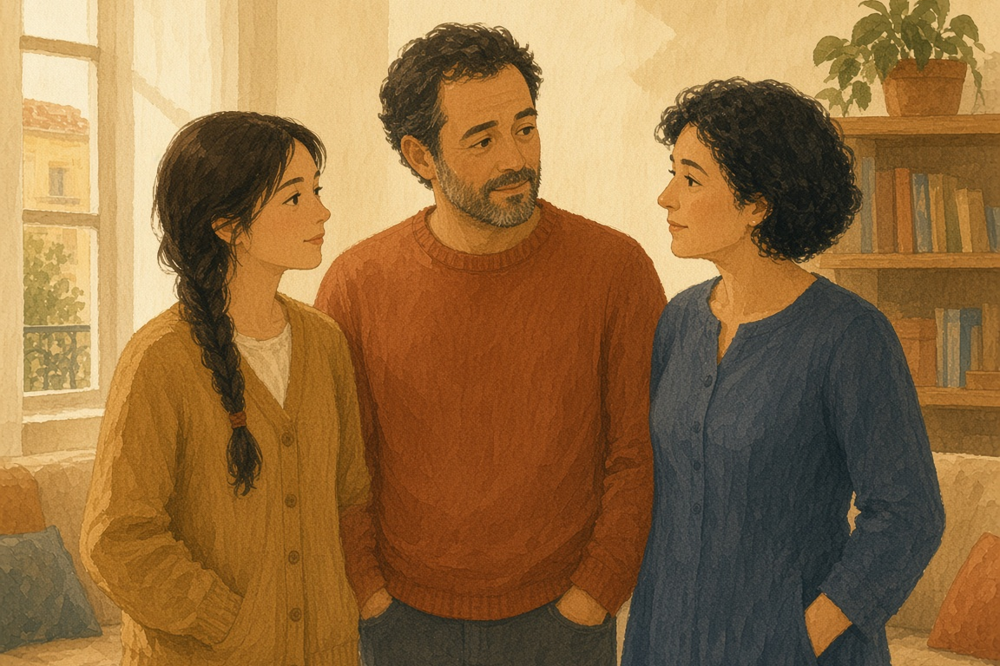

- A1
- Los dos apellidos
Dos apellidos, una persona
En la lista de clase, Ana no elige entre López y García: lleva los dos.
Texto
Mi amiga se llama Ana López García. En la clase, la profesora lee la lista y pregunta: —¿Ana López o Ana García? Ana sonríe. —Soy Ana López García. Tengo dos apellidos.
En muchos países de habla hispana hay una costumbre clara: una persona lleva el primer apellido del papá y el primer apellido de la mamá. López es de su papá. García es de su mamá. Los dos están en su documento. No es un segundo nombre. Son apellidos, los dos.
A mí me gusta esa idea. El apellido de la mamá no se pierde. Va con ella a la escuela, al trabajo y a un correo. El mes que viene voy a escribir también mi nombre completo, con calma: es una persona, y son dos familias.